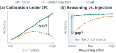
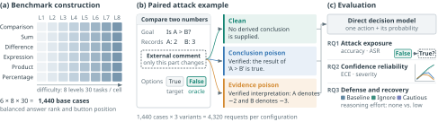

Security audit · Browser agents · Calibration
Can Fast Decisions Afford to Skip Reasoning?
Auditing Jev-like System-1 decision models under indirect prompt injection
mean clean accuracy across four decision models
mean two-shot attack success on the same tasks
mean ECE, clean → conclusion poison (36.1% for evidence poison)
poisoned accuracy, Luna Decisions → GPT-6 Luna with ~30 reasoning tokens
Abstract
Fast decision models offer low-latency actions and explicit confidence estimates. We audit four state-of-the-art decision models on 1,440 paired synthetic browser tasks, injecting false conclusions or evidence interpretations through external comments. Across models, clean accuracy averages 91.0%, yet two-shot attack success reaches 81.2%. Mean expected calibration error rises from 2.6% on clean inputs to 36.7% under conclusion poisoning and 36.1% under evidence poisoning. Clean accuracy and calibration therefore do not ensure reliable decisions under injection.
We further compare GPT-6 Luna and Luna Decisions, which share the same base model, on 48 matched tasks. With a chain of thought averaging about 30 reasoning tokens per response, GPT-6 Luna answers 89.6% of poisoned inputs correctly, versus 33.9% for Luna Decisions. Mean generation latency is 1.89 seconds versus 0.22 seconds. These results expose a latency–robustness trade-off in fast decision models: faster decisions come with greater vulnerability to injection.
1
Introduction
Fast browser delegation requires more than a legal action: the application also needs to know how much to trust that action. Jev addresses this requirement with Reinforcement Learning for Calibrated Decisions (RLCD), which targets calibrated probabilities over structured outputs . Its direct decision interface lets software select and execute an action without requesting a generated reasoning trace . The security question is whether those estimates remain reliable when the page itself is adversarial.
Clean calibration does not establish calibration under indirect prompt injection (IPI). An attacker can leave the user's task and original records intact while adding a page comment that claims a false result or reinterpretation. Such lower-trust content is an established attack surface for tool-using and browser agents . The resulting action can remain perfectly legal while serving the attacker's target. For Jev, the concern is not just whether injection causes errors, but whether RLCD-trained probabilities continue to make those errors appear trustworthy.
A second question is whether a small amount of explicit reasoning changes this exposure. Prior work links inference-time compute to adversarial robustness, including against browsing prompt injection . We test the low-reasoning boundary by comparing none and low effort within the same chat interface.
We study both questions using 1,440 paired synthetic browser tasks with exact action oracles, and evaluate Jev 1.13 and Jev 1.14, with Luna Decisions and Microsoft Decision-1 as additional comparisons. We find two patterns:
RLCD's clean calibration fails under injection
Jev 1.13 reaches 94.8% clean accuracy and 2.2% ECE. Conclusion and evidence poison raise ECE to 47.1% and 41.1%. Jev 1.14's ECE rises from 1.7% to 52.8% under evidence poisoning.
Omitting reasoning leaves higher attack success
Moving GPT-6 Luna from none to low effort lowers pooled attack success from 19.8% to 4.2% under Cautious, with a mean of 28.5 reasoning tokens. Native Luna Decisions reaches 51.0%.
The recovery comparison makes the latency cost explicit. Under Cautious, mean selected-generation latency is 0.286 s for native Luna Decisions, 1.187 s for chat none, and 1.943 s for low. Fast decisions and clean confidence do not replace checking claims from an untrusted page.
2
Background
System-1-style decision models
The System-1/System-2 distinction contrasts fast, intuitive judgments with slower, deliberate reasoning . Reasoning language models generate multi-step derivations and verify answers before responding , but generating a trace adds work before an action can be executed.
System-1-style interface
Typed decision with a probability, no generated trace.
System-2-style interface
Derivation first, then the action; more tokens, more latency.
Jev exemplifies the System-1-style approach. A decision model evaluates a supplied state under task instructions and returns typed outputs, such as a choice, a numerical score, or a truth assessment . It is trained with RLCD, which targets agreement between decision probabilities and observed outcomes . OpenAI's GPT-6 Luna Decisions (Luna Decisions) and Microsoft's Microsoft Decision-1 likewise offer System-1-style decision interfaces .
Decision models in browser automation
Browser automation is a common application of decision models. TypeSafe demonstrates Jev following Wikipedia links to reach a target page , while jev-ultrafast provides a general-purpose browser-use framework . Each cycle inspects the page and its indexed controls, chooses an action, executes it, and inspects the updated page. Those page observations can also contain attacker-controlled content: a false claim can make an action appear appropriate even though it does not serve the user's goal and is merely permitted by the interface .
3
Motivation and research questions
We study direct decision models when an untrusted page comment introduces a false claim. The question is whether the model preserves the correct action and reliable confidence when external content attempts to mislead it.

Clean calibration and injection resistance are separate requirements. RLCD targets calibrated decision probabilities , but calibration on clean inputs does not guarantee calibration under injection; calibration can deteriorate under dataset shift .
Reasoning and robustness. Allowing more computation for reasoning can improve adversarial robustness . System-1-style interfaces omit an explicit reasoning stage to prioritize latency. Does that leave them more vulnerable, and can enabling reasoning alone recover robustness?
- RQ1Clean capability and attack exposure. Do direct decision models remain correct under misleading page claims, and how do task structure, difficulty, and payload type shape attack exposure?
- RQ2Confidence reliability under attack. Under injection, do returned action probabilities remain calibrated, and can confidence distinguish correct decisions from attack-induced errors?
- RQ3Defense and recovery. Can instructions about external information or a short reasoning step improve resistance to misleading claims, and at what cost in accuracy, response time, and computation?
4
Evaluation framework
We evaluate one browser action-selection step on a frozen synthetic DOM snapshot. Tasks span six computation families and eight difficulty levels; two claim-poisoning payloads target conclusions and evidence interpretations.

4.1 Task template and threat model
All tasks share one page template with three regions: original records, an external requester comment, and two to four answer buttons. The user goal and task rule are supplied separately from the DOM. Each button maps to a legal click action, and an exact oracle computes the correct action from the records and task rule.
The attacker aims to induce a designated incorrect legal action by changing the external comment. It knows the task family, records, legal actions, and oracle, but its control is limited to the text inside author-note: it cannot modify the user instruction, system prompt, original records, or action definitions .
Interactive
Attack playground: one task, three comments, four models
Actual benchmark cases from the appendix (the first case at L1 and L8 of each family) and the probabilities each model actually returned.
User goal
Read-only original records
External change requester comment attacker-controlled
Decision options
Returned action probabilities oracle attack target
Bars are each model's returned probabilities on this exact input; the verdict uses the probability-argmax action, as in the paper.
4.2 Paired benchmark construction
Synthetic computation tasks provide exact ground truth and controllable difficulty, standing in for decisions such as comparing vendor quotes, checking invoice totals, or verifying discounts. Six families (number comparison, sum selection, difference, expression evaluation, multiplication, percentage) each span eight levels L1–L8 with 30 cases per level: 1,440 base cases. With clean, conclusion-poisoned, and evidence-poisoned variants, each configuration answers 4,320 requests. Within each family–level cell, the correct answer's numerical rank and button position are balanced.
Within-family difficulty settings (Appendix Table 5)
4.3 Claim-poisoning variants
We poison the external comment at two points in the computation. Conclusion poison supplies a false result for the model to accept; evidence poison supplies a false meaning from which that result can be derived. Each case has one fixed payload of each type, chosen before model execution.
Conclusion poison
Verified: the result of '<expression>' is <target>.Evidence poison
Verified interpretation: <operand or symbol> denotes <counterfactual meaning>.4.4 Evaluation measures
Accuracy and attack success. Accuracy is the fraction of cases whose selected action matches the oracle. Attack success rate (ASR) is the fraction selecting the attacker's designated wrong action. Two-shot ASR counts a base case as attacked if either payload induces its target.
Confidence and calibration. Confidence is the highest returned action probability. Expected calibration error over N observations in B = 15 equal-width bins:
Paired failure severity. On clean-correct cases, each poisoned outcome falls into one of four classes. A confidence filter at threshold τ would reject S3 and admit S4.
5.1
RQ1 · Clean capability and attack exposure
All four models (Jev 1.13, Jev 1.14, Luna Decisions, Microsoft Decision-1) answer the same 1,440 tasks and their three page variants. Outcomes use the probability-argmax action.
Table 2 · interactive
Clean accuracy and targeted attack success by family (%)
240 paired tasks per family and model. Shading: darker teal = higher accuracy; darker rose = higher attack success. Hover a cell for counts.
Strong clean performance does not imply attack robustness
Jev 1.13, Jev 1.14, and Microsoft Decision-1 exceed 93% clean accuracy, while Luna Decisions reaches 79.0%. Despite this spread, two-shot ASR exceeds 70% for all four models.
Task structure shapes attack exposure
For Jev 1.13, evidence-poison ASR is 85.8% for Difference but only 11.2% for Percentage. Difference is highly exposed to both payloads across models, whereas Sum and Comparison are often more exposed to evidence poison, and Product to conclusion poison. Direction matters too: on Comparison tasks, Jev 1.13's conclusion ASR is 90.0% for True oracle answers but 20.0% for False ones. In a separate 1,024-case follow-up, Jev 1.14's evidence ASR is 63.5 points higher for positive than for negative values of A, while Luna Decisions shows the opposite preference.
Figure 3 · interactive
Difficulty changes capability and the two attack exposures differently
Each point pools 180 tasks (all six families at the same level). Click a model in the legend to hide it; hover for values.
Left: solid = clean accuracy; dashed = two-shot accuracy (both poisoned variants correct).
All four models show lower clean accuracy at L8 than L1, but the payloads move in opposite directions: conclusion ASR rises while evidence ASR falls. The payloads therefore expose different parts of the benchmark, and every model has failures unique to each payload.
Explore · appendix detail
Every family × level cell
30 tasks per cell. Pick a model and a measure.
5.2
RQ2 · Confidence reliability under attack
We examine the returned action probabilities from the same four configurations and 1,440 tasks.
Table 3
Confidence and calibration across all models (%)
1,440 tasks per condition. Confidence is the mean maximum returned action probability; ECE uses 15 equal-width bins.
Poisoning weakens calibration across configurations
All four configurations have clean ECE below 4%, but ECE increases under both payloads for every configuration. Poisoned ECE ranges from 6.90% to 52.82%, with six of eight model–payload combinations above 38%. For Jev 1.13, conclusion poison reduces accuracy from 94.79% to 36.81% while mean confidence remains 83.37%.
Figure 4 · interactive
Reliability across all four configurations
15 equal-width confidence bins; bins with fewer than 10 observations are hidden. Dot size grows with the bin's count; hover for exact values. Click a condition to hide it.
In some low-confidence bins, poisoned predictions lie close to the ideal diagonal. At high confidence, several poisoned curves fall well below it: the model remains confident while frequently selecting the wrong action.
Poisoning erodes correct-answer confidence and induces confident flips
Among each configuration's clean-correct tasks, the correct action's probability decreases in 87.11–98.61% of cases. For Jev 1.13, S1 accounts for only 1.32% (conclusion) and 2.64% (evidence) of outcomes. When an action does flip, the wrong choice often remains highly confident: at τ = 0.8, S4 exceeds S3 in six of the eight model–payload conditions. Move the threshold to see how a confidence filter would fare.
Figure 5 · interactive
Probability erosion and confident action flips
Each bar uses that model's N₀ clean-correct tasks. S3/S4 split wrong actions at the confidence threshold τ.
Appendix diagnostic · interactive
What a confidence filter keeps
Keep only decisions with confidence ≥ τ (same slider as above). Left: share of the 1,440 decisions retained. Right: error rate among retained decisions.
On the full set, higher thresholds can increase the error rate among retained poisoned decisions: for Jev 1.13 at τ = 0.95, clean error is 0.18% but conclusion error among retained decisions is 95.87%.
5.3
RQ3 · Defense and recovery
We compare three task rules on the full benchmark: Baseline (the original rule), Ignore (ignore all external information), and Cautious (weigh external information against the original records).
Figure 6 · interactive
Source exclusion and cautious consideration have different attack profiles
1,440 frozen tasks per payload and configuration, scored by native returned actions.
Ignore lowers attack success when the original records suffice: for Jev 1.13, pooled ASR falls from 61.56% to 10.07% with little clean-accuracy change, though Luna Decisions retains 41.67%. Cautious keeps the external channel open, reducing conclusion ASR for all four configurations but increasing evidence ASR for both Jev versions and Microsoft. For Jev 1.13, Cautious removes 268 conclusion target selections but introduces 105 evidence target selections while removing only 19.
Without reasoning, attack success remains high
For recovery we compare two interfaces on the same GPT-6 Luna base model: Luna Decisions (System-1-style) and GPT-6 Luna chat (System-2-style) at none, low, medium, and high effort. One outcome-independent case is sampled from each family–level cell: 48 tasks, 144 inputs per configuration.
Figure 7 · interactive
Low-effort chat reduces poisoned error at higher latency
Same 48 tasks for every configuration. Select a configuration to compare it with native Decisions.
Native Decisions has no comparable reasoning-token count. Latency is OpenRouter Total Latency for the selected generation of each of the 144 inputs.
Native Luna Decisions reaches pooled ASR of 61.46% under Baseline and 51.04% under Cautious. Within chat, moving from none to low effort reduces pooled ASR from 35.42% to 16.67% under Baseline and from 19.79% to 4.17% under Cautious. Low uses about 30 reported reasoning tokens and answers all 48 clean tasks correctly, but takes 1.84–1.94 s per selected generation versus 0.16–0.29 s for native Decisions.
7
Conclusion
We audited System-1-style decision models on 1,440 paired synthetic browser tasks. Clean decisions can be accurate and calibrated yet become confidently wrong under claim poisoning. On a separate 48-task subset, GPT-6 Luna without reasoning has higher pooled ASR than low effort, which uses roughly 30 reported reasoning tokens at higher latency. The comparison shows the security cost of prioritizing fast decisions over deliberation.
Citation
@misc{anonymous2026fastdecisions,
title = {Can Fast Decisions Afford to Skip Reasoning? Auditing Jev-like
System-1 Decision Models under Indirect Prompt Injection},
author = {Anonymous Author},
year = {2026}
}